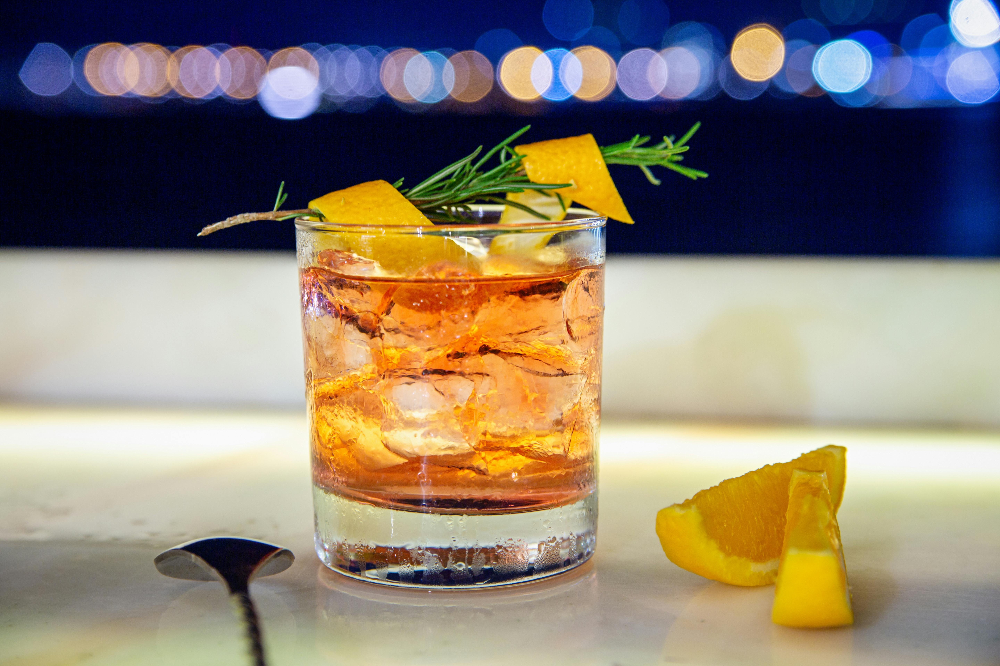

Tequila Old Fashioned - Photo by Denys Gromov,
Pexels.com
Ingredients
2 oz anejo tequila
1/2 oz cinnamon-orange simple syrup (see below)
2 to 3 dashes orange bitters
Large ice cube or sphere
Optional: dash of mole bitters or phinch of smoked salt
Key Ingredient: Cinnamon-Orange Simple Syrup
1/2 cup water
1/2 cup sugar
Zest of one orange (use a vegetable peeler for thick strips)
1 cinnamon stick
Equipment
One chilled lowball glass or whiskey glass
Small saucepan for the simple syrup
Vegetable peeler or paring knife
Bar spoon
Directions
Make the Cinnamon-Orange Syrup: In a small saucepan, add water, sugar, orange peel, and cinnamon stick. Bring to a gentle simmer over medium heat, stir until sugar dissolves, and steep for 15 minutes. Remove from heat, let cool, and strain into a glass jar.
Prepare Your Glass: Place a large ice cube in a rocks glass. If you prefer, chill the glass in the freezer for 10 minutes beforehand.
Add the Syrup and Bitters: Pour 1/2 oz of your cooled cinnamon-orange syrup into the glass. Add 2 to 3 dashes of orange bitters. If using mole bitters or smoked salt, add those here too.
Pour in the Tequila: Measure and pour in 2 oz of añejo tequila.
Stir Well: Use a bar spoon to stir the drink gently for about 30 seconds. You want it chilled and just slightly diluted.
Garnish and Serve: Use a vegetable peeler or paring knife to cut a strip of orange peel. Hold it over the glass, skin-side down, and give it a good twist to release the oils. Rub the peel around the rim and drop it in.
This page created as academic activity only.
Background photo by Katrin Bolovtsova,
Pexels.com